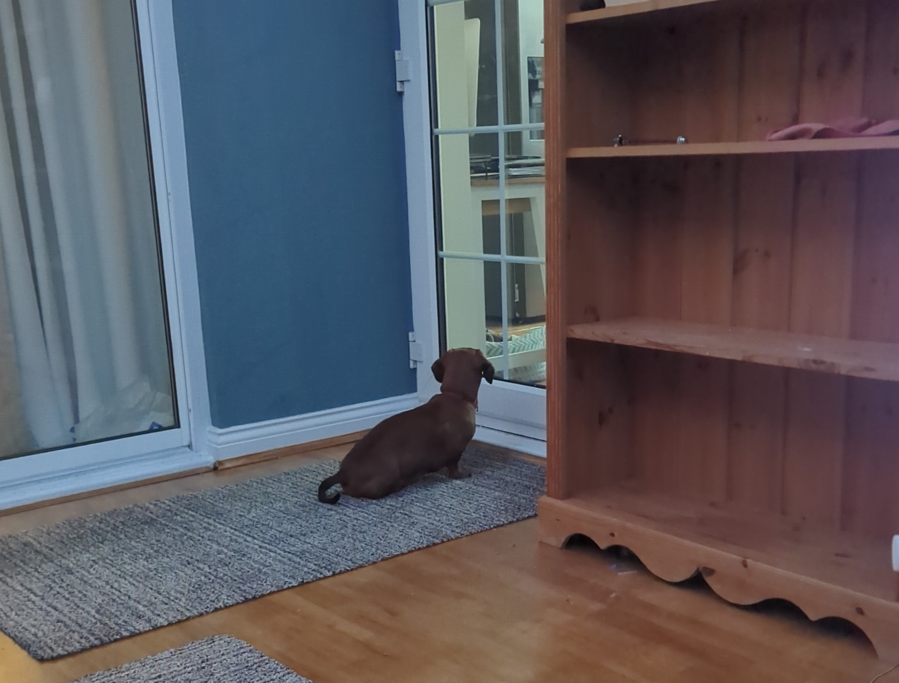
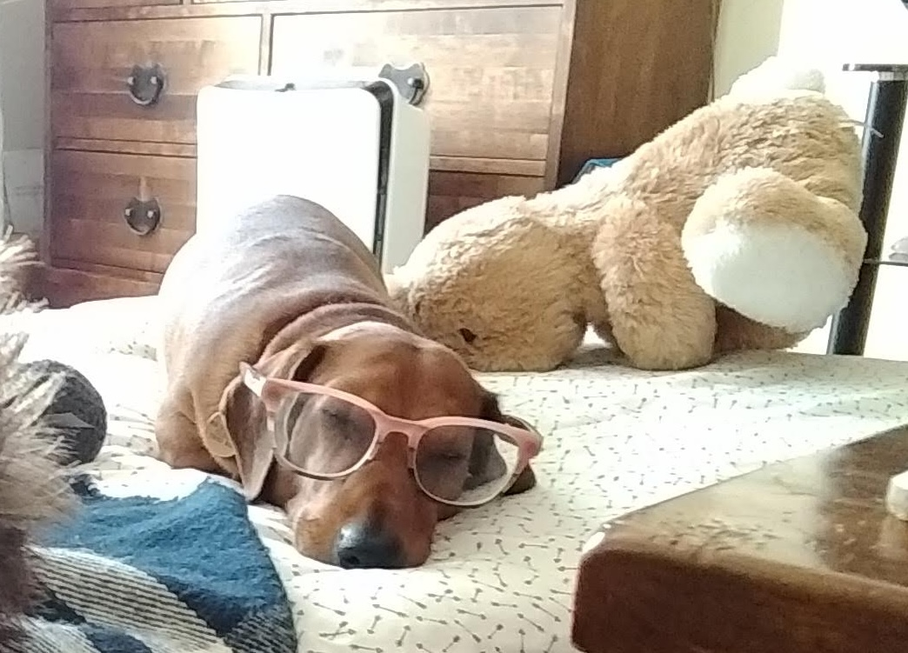
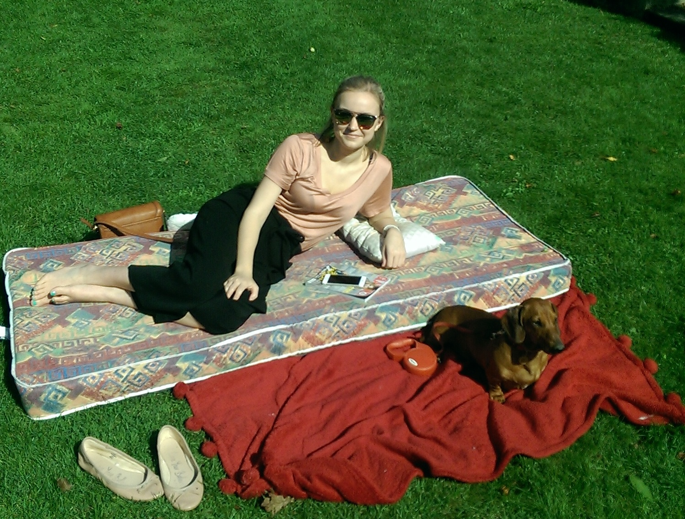
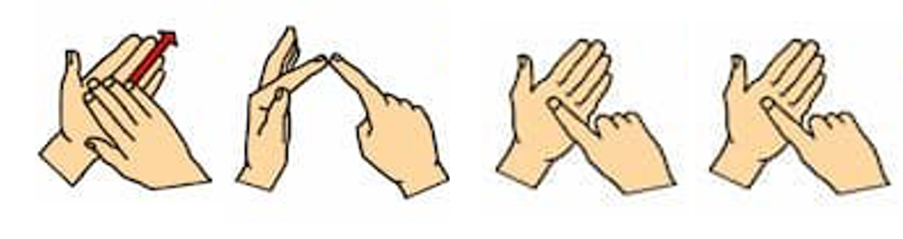
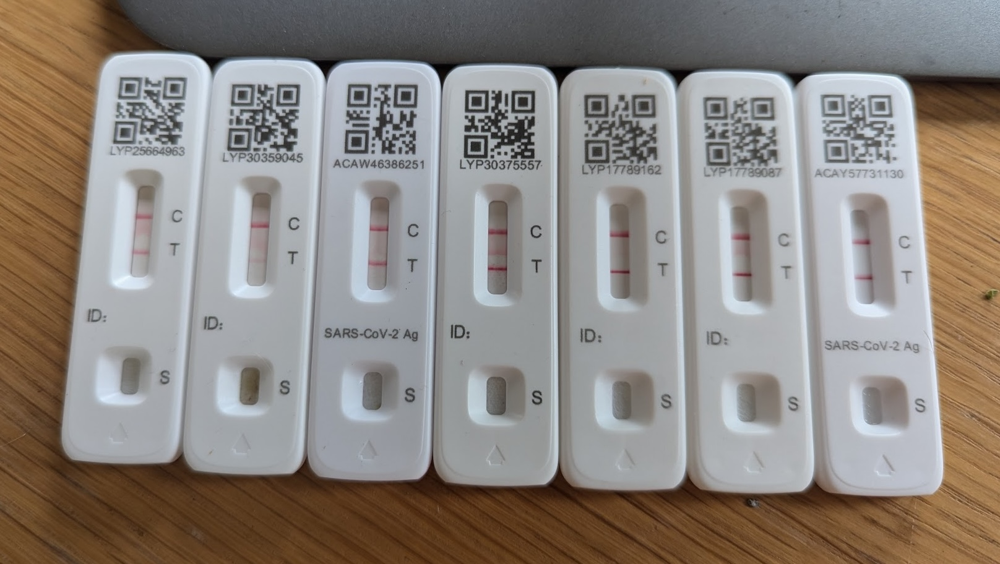

Introduction
You may know me. You may not. I am Daniel Padfield, a microbial ecologist and carer. I live in Cornwall and my partner of 11 years is called Sophia Galpin. She lives in Cheltenham with her family and has very severe ME. She has been getting steadily worse for around 10 years, and is now bedbound in constant neuropathic pain. I visit every three weeks for 3 to 4 days.
The pain and suffering she gets through is very difficult to describe, but I have decided to try and document each visit in some, small way. This is my account, of how it feels to watch her, of how I see her suffering. This is my account because she cannot tell the world about what she is going through. Right now she cannot speak. Cannot text in full sentences. Cannot write.
A warning that this set of posts are going to be very sad.
07/04/2025 Looking through the keyhole its still bright inside.
We moved Soph to try and avoid the worst impacts of Cheltenham race week, and allow Karen to deep clean her bedroom and make some changes where we could. We knew that the move would be traumatic, but hoped that over several weeks she would recover her strength and return back to her pre-move (still very low and extremely poorly) baseline.
Unfortunately it has not been very restful. Karen did an amazing job getting the room ready - they even moved Soph’s mattress between rooms - but there are just so many things we that we could not foresee. Primarily it has been the light. The south facing window of the room she is currently results in much more light which completely exhausts her. Over several weeks Karen has been taping bits of fabric around the curtains to minimise the light, but it is still not perfect. And because there is no air-con in that room, we have to move her back before peak summer. The anxiety is overwhelming if I sit with it.
At one lunch this visit, I tried tinkering with the curtains to prevent some light coming in that was meaning Soph was wearing her eye mask all day. Soph was trying to tell me what she wanted, but her speech and ability to communicate and sign is much worse at the moment, another heartbreaking outcome of this current crash. We went back and forth until I had to stop because it was eating into her energy for having lunch. I sat down, poured the soup from the flask into the cup, and got ready to hold it to her mouth. However, all that back and forth about the curtains had pushed her too far beyond her limits. I had to leave; she ate no soup. Overall her vertigo is worse, communication harder, and fatigue overwhelming. The tightrope we walk feels ever more precarious.
And yet, there are uplifting moments amongst the suffering and despair. At a different lunch, Soph made a comment that I could - thankfully - understand. And it was quick, dark humour that just set me off laughing. And I couldn’t stop. A laughing fit while Soph is lay on the bed, unable to look at me or really respond is quite surreal. She smiled in response. Its so rare that she hears people laugh anymore! Her smile is golddust, a new wonder of the world. Chasing it is a reason for being.
She now often makes the sign of a key being put in a lock over her heart, to explain that she feels locked, trapped inside her own body. These moments demonstrate that when you peer through the keyhole, it is still bright inside. She still surprises us with her strength, humour, and desire for independence.
18/03/2025 It feels like we’re drowning.
This year has just been one thing after another. In the last month Soph has had a course of antibiotics, moved to her mum and dad’s room before the Cheltenham races, and then endured race week. This is on top of the daily fight to live. So it is no wonder that she is worse, but it does not make it easier to watch.
It is not the festival per se that makes Soph more poorly, but the steady stream of helicopters bringing in festival goers. For 4 days helicopters fly in low and circle above the racecourse for several hours. Soph’s sound sensitivity means that this is extremely disruptive for her, and as her room does not have carpets the helicopters cause small vibrations to her bed. For someone with vertigo all the time, this caused a substantial deterioration in her condition last year. As a result, this year Soph’s family moved her.
How would you move someone who has not sat up for year, likely cannot support their own body weight, has full body neuropathy, vertigo, noise and sound sensitivity? Karen bought an old massage chair that could go up and down, and John cut it down to size, reupholstered it, and added casters. It was not perfect - nothing was going to be - but it was the bespoke solution we needed. After one failed attempt they successfully moved her, although it was traumatic. I wasn’t there for the move, and I am slightly ashamed to say I am relieved that I was in Cornwall. It is so harrowing watching her push herself to do those things. That is the first time she left that bed in a year. I did not receive a message from her in 18 hours, which is made worse by knowing how desperately she does want to interact.
The move did help with the vibrations from the helicopters, but the room she is in now is directly above the kitchen, and is not overly sound proof. So to keep quiet we have mainly decamped to the conservatory, are careful about when we run water or shower, and generally stay out the kitchen wherever possible. Copper is confused by the changes and spends a lot of time wondering why we are not in the kitchen as we normally are! The changes her family make to protect Soph and give her the best chance to improve - or not get worse - are incredible and inspiring.

I came up on Saturday, a week after the move, a day after the festival ended. My visitwas delayed four days meaning I isolated for longer than I needed, but this is the way at the moment. When her condition worsens and she is pushed more into energy deficit, she knows she still has to eat, drink, and use the bedpan. Consequently, it is the communication and interaction (as well as other things I likely don’t know about) that cruelly get taken away. I try so hard to understand her. I pride myself on it. But this visit I could not understand her most of the time. I am finding that really hard to come to terms with.
We hope that in over several weeks, as we get back into some sort of a stable routine, we might be able to understand her better again, and she might improve from this new low. But how likely that is, no one can say. No expert exists to tell us these things. On the other hand, maybe there will be building works on our road, or a music festival, or the arrival of spring will mean people go about their gardening jobs (as I love to). And when it gets hotter she will have to move back because there is no air conditioning in her mum and dad’s room. People with severe ME need modern life to stand still sometimes and it doesn’t.
I feel like my brain is mush and this post feels like a completely scatter gun of thoughts. But it might as well represent how I am and how I am thinking. Nice things are lambs are out and I ran Bath half marathon in 01:23:56, meaning this is the fittest I have probably ever been!
22/02/2025 How does she do it?
“Hold it in”, Soph whispers to herself to try stop tearing up at the sheer severity of her suffering. Crying increases her fatigue and exacerbates other symptoms so she does her utmost at all times to not cry. I don’t say anything. I sit silently next to her, watching her in case I miss something she wants to say or makaton sign. I dare not look away.
“I do not feel right” is amongst the scariest thing Soph has said to me in a long time. For someone who suffers every second of every day, it must take quite something out of the ordinary levels of depravity to “not feel right”. I absorb the words, wishing I had anything I could say or do to help. Instead, I acknowledge I have understood, and then whisper “I am so sorry, you are doing so well”.
This trip has been amongst the hardest I can remember. Soph has had a Staph aureus skin infection for several months and around two weeks ago she finally took some antibiotics aimed at clearing it. The antibiotics made her worse, everything seems to. I often think of Soph in terms of a flower, some of the most beautiful are also the most fragile. The antibiotics - according to Soph - have also not cleared the infection, although given where it is she cannot see it, and she does not want me or Karen to see. Not the best way to know if the antibiotics have worked, but she has so little dignity that we admire her defiance. She is truly amazing.
Her extreme fatigue and symptoms mean that her life is one big depressing zero sum game at the moment. Any energy she uses for one thing, she has less energy for something else. Apart from her total energy is also less, like a battery slowly losing its capacity through time. She is so fatigued. Her ability to communicate is worse. My ability to understand her worse. This means we have barely been able to have any interaction during this visit, and I have not been able to stand at the foot of her bed for her to see my face. She cries and gets upset because we have had no time and said zero words to each other. All we want to do is be able to talk and listen to each other. Even that is too much to ask for at the moment. She cannot lift her arms very well and often has to use her right arm to manoeuvre and lift her left into the position she wants. She cannot put her eye mask over her eyes very well anymore. She will almost throw it onto her face and then move it in place. Sometimes she does not have the energy for that, and just has to lie there - frozen with exhaustion - with it half over one eye, and half over her nose. A similar thing happens when we change her glasses and undress her. Today I learned that right now she cannot close her eyes in the day - it would make the need for the eye mask less - but she did not have the energy to tell me WHY she can’t. All the while I sit and watch, trying to talk whenever I can. Trying to keep myself from crying. Feels like each moment burns into my memory.
And yet she gets through each day. She forces herself to eat soup. She still sends suggestions and agrees to new soups for us to make. She still fights for whatever interaction and communication she can. And I have no idea how she does most of it. How does she drink her shake in the morning, take her meds, or drink her water from a pint glass? This is incredible given she cannot sit up and her arms shake almost constantly; she must drag them from her bedside table onto her bed. Her defiance to keep on doing as much as she can herself, and not to lose anything more, is inspiring. It keeps all of us going. And when I see the hint of a smile, or she strokes my hand with hers, my heart soars. It does feel however - and I know I have said this before - that there is not much left to lose.
And watching her slowly get worse profoundly impacts all of us. My work and life setup does not feel sustainable. I feel like I am slowly drowning in everything. Most of the time this feeling passes, but I have not worked out how I get over it. Hopefully it is always darkest before the dawn.
04/02/2025 Soph has not seen our dog Copper properly in over 6 years.
Copper - as some of you may know - is our 9 year old sausage dog. He was meant to be our great silver lining. When Soph became ill and unable to work, it meant she was at home so much more. Which gave us the opportunity to get a dog, and we specifically got Copper because he does not need walking so much with his tiny ridiculous legs.
And he was a triumph. He loves people and company, and loved Soph in particular. He just loves being on you, touching you, stealing your warmth. We toilet trained him, taught him tricks, and the couple of summers we spent in Cornwall together as a 3 are among my happiest memories. And Soph loves him so much. She loves how he holds toys between his paws while he chews them, and how he rolls on his back for scritches and so many other things (apart from his barking). We used to enjoy dressing him up and trying to put our glasses on his face while he snoozed next to us. We were a tripod supporting each other.

Soph has not been in Cornwall for ~7 years, and Copper has not either. As I live alone and try to get to the office when I am down there it is not the best place for a dog, so he lives in Cheltenham. When Soph was downstairs this worked ok. He would wait for her to come downstairs in the morning and be so excited to see her, showing her his belly and asking for scritches and giving licks. He is not an ideal companion dog, but he loved being around Soph as much as he could.

However, as Soph has got worse she has seen Copper less. When Copper goes upstairs he is very alert and wants to sniff everything compared to the mellow, settled dog we’d need him to be so that Soph’s vertigo is not triggered. A few years ago when I still managed to very occasionally bring him upstairs, she would enjoy seeing him, she would smile and be engaged. He would lick her hand and let her be stroked, but he could sense something was wrong and need reassurance from me.

Fast forward to today, he is sat on me under a blanket while I am typing. Soph has not seen him properly in >6 years. Yet another heartbreaking thing she has lost. Instead he lives downstairs providing company and emotional support for the rest of us. I describe him as a living hot water bottle and stress ball (he is lay on me under a blanket as I type this). He is great for me when I come up to visit. And I am so thankful for Soph’s family for looking after him so well.

I often describe Soph as being in stasis, like her life is on pause - albeit while going through indescribable suffering - until we can have our little lifey. And that means she remembers Copper when he was 3, not when he was 9. In that time he has recovered from a slipped disc which left him unable to walk, had some cancerous tissue removed from a paw, and started greying under his chinny chin chin. But he is not allowed to get old. Not until Soph recovers somewhat to be able to see him regularly again The thought of him dying of old age while Soph is still alone, suffering in her bed, crosses my mind briefly. Cannot even imagine how we would tell her.
13/01/2025 We’re in the same room, but she can’t really see us.
In the last post, I described how little time Soph sees people in a day, but using the word “see” is very misleading. Soph’s ME/CFS means she very rarely “sees” us in the way you would expect. For instance, after I told her I was going to talk about her vision, she messaged to say she remembered the last time she saw my eyes - February 2024 (nearly a year ago). There are multiple reasons why Soph no longer gets to see us in any traditional sense, and they combine to be another cruel, complex, debilitating, and heartbreaking outcome of her severe ME/CFS.
First, Soph regularly loses her vision regularly in her left eye for an hour or two. This can happen several times a day, and we are not sure why (I don’t think). Her eye waters and she kind of shrugs it off; she has much more extreme symptoms to survive through each day! Oops its happened again. Imagine what you would do if you suddenly lost sight in one eye!?!
Second, Soph has severe light sensitivity, which means she cannot tolerate much light. During the day she wears prescription sunglasses indoors during the day, and she has the curtains closed apart from a slither of light that is angled towards the other end of the room to the one she lies. She only uses lamps that have low brightness, and we help her change into normal glasses in the evening from 8pm.
Third, her vertigo is so extreme that any changes in her head position can set off an attack. So Soph just looks straight forward, and rarely - if ever - turns her head. She has a very restricted field of view. When we move through her field of vision, this can also set off a vertigo attack. So Soph wears an eye mask when Karen is sorting the room out at bedtime, and when we move around the room at lunch and dinner, and even when we are refilling her cup for the next mouthful of soup.
We all do the best we can. We have nice prints at the wall facing her so that she has lovely things to look at (we have had new prints for >1.5 years that we still have not managed to change over). She has a moon lamp and some nice tea light holders that she puts on in the evening. But all of our care is delivered by her bedside, which means she cannot see us, in the traditional sense of the word. She cannot see our eyes, our lips, our facial expressions. She cannot see the tears rolling down my face as I watch her suffer, or the smile that comes from her making a dark joke or when we share a memory of better times. Instead she seems to sense our emotions and what we’re doing in her peripheral vision and through her other senses. She really is desperate to maintain connections despite all of her limitations. Her fight keeps us all going.
Finally, to briefly rant. This trip was delayed as I got a lurgy for Christmas. I hate that Soph has to make decisions about when she is comfortable or able for me to come visit. It breaks my heart. And I will remember this trip for seeing a kingfisher, getting two fleeting but precious smiles from Soph, and spilling soup down her face during lunch and having to leave after just 1.5 mouthfuls (normally she does 5.5). Oh and her fatigue and general suffering was so bad on the last lunch we did not get to say goodbye. Sigh.
09/12/2024 So close yet so far apart.
Last year (2023) I visited Soph every third weekend and stayed for 5 nights from Thursday to Tuesday. It never feels like enough, but Soph’s fatigue is so severe and she is so poorly that she cannot manage more. She also puts in so much effort to engage on my visits that seeing me can actually make her more ill. Heartbreakingly, because she is worse in 2024 I only come up on Fridays, so we have lost 20% of our time together. But in reality we have lost much more.
As Soph has gotten more ill, the time she can see people each day has decreased, and the proportion of that time that she gets to interact with people - rather than just surviving - has shrunk. In total, for most of 2024, she sees people for a max of 1.5 hours each day (probably less). During my visits, I probably see her for less than one hour each day, and only around thirty minutes of that is when I am not feeding her. Only thirty minutes of “quality” time to just be in the same room as each other.
During each long weekend visiting Soph, I see her for a total of around 4.5 hours. Unbelievable. The rest of the time she lies alone upstairs as we potter around downstairs, always worrying whether the day will be worse than the day before. So close, and yet so far apart. When I am in Cornwall and have been in work since 9, had meetings, ate lunch, been for a run, my mind wanders and realises it is 2:30 and Soph has been alone apart from a fleeting 5 or 10 minutes. Every single day. It is inconceivably cruel.
She must be so lonely. She is desperate to interact but is physically and mentally unable to do more than she currently can. She has to deal with terrifying, complicated and severe symptoms alone. To cope with vertigo attacks without being able to call for help.
But it is a lonely existence for the carers too. I find it very hard to find anyone my age with such a complicated life situation helping care for someone so so poorly. It feels like I lead a double life as a researcher and a carer, which ends up meaning I feel inadequate at both: not doing enough work and cannot seem to stop Soph’s slow, depressing, heartbreaking deterioration no matter how hard we all try. Logistically, I still self-isolate in Cornwall for 5 days before I travel to Soph’s, which is much lonelier in the winter when days are shorter and the weather worse for sitting outside. My friends are still super about this, always willing to wear a bunch of layers and brave the outside with me. But it does not stop you feeling like a burden. Like I am always bringing people’s mood down. Suppose we must always feel like that sometimes.
18/11/2024 When was the last time we kissed?
We were the most tactile couple. Living in each other’s pockets. Snuggling under blankets on a Sunday watching a film. Cuddling at night until we inevitably got too hot. And we still are, but in mind rather than body.
Through the last ten years, Soph has developed extreme skin sensitivity - a condition called allodynia - her whole body neuropathic pain has become ever more extreme, and her lips and mouth are constantly on fire. What this means in practice in that her clothes cause her pain. Touch causes her pain. Soup on her lip causes her pain. Everything causes her pain. It is impossible for me to convey what it feels like, but when she sleeps she often has nightmares about being stabbed.
I find it the hardest when her suffering is most extreme (if it even varies anymore). When her vertigo flares, and her arms flail and she screams in fright, I can’t grab her hand, can’t hold her, can’t just reach out and try make her feel safe. When feeding her soup, I sometimes tip the soup in too fast which causes her to feel like she is choking and she starts coughing and spluttering. I can’t help her drink water, can’t tap her back, can’t hold her. I just have to sit and watch, feeling helpless and hopeless. It rips me to pieces and shatters my heart.
We have had so much taken away from us. Most of the normal things couples do we have been unable to do in years. Years without being able to physically show each other affection. I cannot remember the last time we kissed on the lips. The last time we had a proper hug or a cuddle. Let that sink in. No doubt Soph will remember. She never forgets how long she has been suffering for. And everything she has lost along the way.
And yet, love and care finds a way, and I now all the tiny physical touch we still share is precious to me. In the evening, I lie next to her, with my arm over her body. Never touching, it reminds me of a lap bar on an old rollercoaster that comes down over your legs to keep you safe in the carriage. She holds my other hand and we gently stroke each others hand. She slowly, shakily moves her hand to my face and gives me tiny, weak, but defiant strokes. I shave everyday so that my face is as smooth as possible for her. When we share a dark joke or a memory, and my cheeks raise - giving away a smile - I know she can feel it. She knows every wrinkle of my face. Every pock mark from my teenage acne. It is one of the ways to maintain closeness.
We are so close physically, and yet we can barely touch. And yet - amazingly - we are somehow closer than ever. More in love now than we ever have been. I have no idea how she does it.
29/10/2024 A Quiet Place.
I arrive at 18:40 on Friday. Instead of going inside and saying hi to Karen, John, and Copper, I sit in my car and wait for Karen to message that it is ok to come in. Soph’s sound sensitivity is so severe that during mealtimes, any extra and unexpected noise is so painful and all encompassing that she cannot eat.
Soph has very severe sound sensitivity which means that normal levels of sound are painful for her. As a result, Soph’s family have tailored the house to keep sound to a minimum. We do not flush the toilets when Soph’s door is open, we are careful around the times when we take showers, we keep the TV volume low, we try and limit the number of times we come in and out of the front door, we never shout through the house, and we keep the doors to where we spend most of the day closed. We try prevent the dog barking (although if he sees a squirrel this is nigh on impossible). Essentially we do everything as quietly and softly as possible.
The same applies when you see her. We wear socks to try minimise the sound of our feet on the wooden floor. We only ever whisper - although the intonation of whispers can be problematic for her sound sensitivity too. We minimise rustling by opening packets of tissues/bags/wipes before we go into the room. We hold back sneezes and coughs, and prevent banging and tapping. We do everything in our power to create a tailored environment for Soph to survive in and give her the best chance of getting through each and every day.
However, we cannot always control the sound levels. It turns out being quiet is hard! Sometimes we accidentally drop something and Soph screams in shock and surprise. That suffering feels preventable. We feel incredible guilt even though it is not our fault. Earlier this year, the Wychwood music festival happened on Cheltenham racecourse and positioned a stage <500m from Soph’s window. This resulted in her getting so much worse and we still have not recovered what we lost. For the last three weeks, neighbours have been having bathrooms and a roof replaced. Karen - to her immense credit - goes out and asks them to stop during key times (e.g. Soph’s meal times) but there is only so much she can do. Soph’s illness - and severe MECFS in general - is often incompatible with normal life and society.
And all these difficulties lead us to discussing pretty wild ideas. Can we soundproof her room somehow? Soundproof a different room where we could then move her? Could she wear over ear noise cancelling headphones (her whole body pain prevents this)? We’re desperate to build in resilience, but right now we can barely tread water.
At the end of the day, the quietness in the house is broken. Soph has kept so much pain inside during the day that she lets it out at night. We hear her scream and wail through the door, but we cannot go in to help.
07/10/2024 Who is looking after who?
From the outside, it looks like we care for Soph. Karen is Soph’s full-time carer. She sorts Soph’s medications, washes her clothes and bedding, makes countless soups, buys endless supplies, and is her medical guardian. The admin, research, and fighting Karen does for Soph is endless. We are all very lucky to have her. Soph’s dad - John - works 8-3 and then comes back to help care for Soph and allow Karen to run errands or take a walk. And then I visit every third weekend to allow Karen and John to do a few different things they cannot do without me there, and to see my beloved Soph. I collected some leaves during a walk as Soph loves autumn and left one for her in her room. She told me it smelled like autumn and the outside. We take so much for granted.
Soph constantly thinks of us as well, despite her being the one who is suffering relentlessly. I just want to highlight some examples of her incredible thoughtfulness and selflessness in the face of her own brutal torture.
First, she hides so much from us. To protect us in some small way. She suppresses screams, holds back tears, and holds her hand to her collarbone - or tucks it into her armpit - to stop uncontrollably shaking. There are many terrifying symptoms that she does not mention - beyond what we see - that must be so frightening. When I lie next to her in the evening for a short time, I can feel her whole body tense as she holds in intense, excruciating, indescribable pain. She then lets out a quiet “oooh” more akin to standing under a shower that is too cold than the feeling of being stabbed by thousands of knives inside and out.

When she explicitly tells us how awful it is - today she used finger spelling for the word H-E-L-L to describe her life - she quickly moves on and downplays the seriousness of it all by saying “it’s ok”. “So so so so so so so so so much suffering, but it’s ok”. She also manages who does what in terms of her care to try and make sure the load is spread to try not to overburden anyone. If we suggest a change, she sometimes says no to protect us, even if she would like to see more of a particular person.
Despite her extreme limitations, she still manages to show us how much she cares. She has two lamps in her room that she can change the colour of. One is a moon-shaped light which she adores. When I enter her room, they will often be blue - my favourite colour. For Karen, she will make them a different colour. She makes sure to ask me if I’m ok, and will regularly mention to me ways in which we could allow John and Karen to take better care of themselves.
She remains my biggest supporter and cheerleader, despite being unable to speak and communication being extremely limited. She asks about my family, friends, and work. She sends me a 🍀 when I have counselling to wish me good luck. She arranges for a caramel shortbread cake for my birthday and arranges with us all to do and buy nice things for each other.
She is always thinking of others. All she wants is to make us all happy. She has a huge heart and is trapped inside her body. She has so much to give the world. She goes through hell every day and we are all incredibly proud. In awe of her force of will and huge heart when she is coping with the cruellest of hands.
17/09/2024 Cruel does not cover it.
This evening I went into Soph’s for our “time” at 8pm. This is the only time of the day Soph really has to try and interact with someone when it is not also about eating soup. Her only time to connect. On a relatively good day, this can last ~30 minutes. Not today. She was using a tissue to cover her eyes as I moved around as she had dropped her eye mask somewhere. Within seconds of lying next to her I realised this was not going to go well. Her hand was limp. Her breathing laboured. Suffering and torture writ all over her face, and her body was tense as she tried to hold everything in. I had to make the decision - even though I had seen her for less than thirty minutes all day - to leave almost immediately as she was so far past her energy envelope, what she can cope with.
I returned with her chocolate, vegan cheese, and oat milk and undressed her. She had nothing left. She could barely lift her arm up for me to move the shoulder of her dress down. She held back screams of pain. I often sing silly made up lyrics to “here comes the sun” by The Beatles, one of our favourite songs, so start a verse, to fill the silence as chatting is impossible.
“Mrs Beanie, my love for you grows each hour,
Mrs Beanie, you are one of the world’s most beautiful flowers…“.
Soph interrupted me. She signs that she did not hear the first line. Despite everything going on in that moment, she was trying to escape, to engage, to listen. She is truly incredible. And it is all so extremely cruel.
And then I have to leave. I closed the door. The last night of this trip reduced to maybe five minutes. And she chose to use her energy trying to see me properly instead of having her sheet changed. And I had spilt soup on it, and other things can get on it. And she just has to lie there. And put up with it. Imagine having to choose between eating, engaging, and having your bedding changed. The lack of independence. Of choice. Of dignity.
I am so heartbroken. Feel so helpless. So incredibly, deeply sad. You do not get used to watching that level of torture and suffering. And yet she does it everyday. She is incredible.
25/08/2024 Covid and the trip that never was.

Shit. On the 15th August I tested positive for coronavirus. I woke up with a sore throat at 2am and just knew. Thankfully I was in Cornwall, and I had 8 days before I planned to go to Soph’s next. Plenty of time. And then I tested positive again and again. Day after day.
I had a holiday planned for after the next Soph visit to attend a couple of weddings and see family. But because of these events, if I did not get up to Cheltenham to see Soph beforehand, then it would be a very long time between visits due to needing to self isolate afterwards.
I tested negative on the 25th August, so I hoped I would be able to see Soph after all and change around some of my holiday plans. I chatted to Karen about what may be best for me trying to come up, but it was just impossible for me to discuss with Soph due to her fatigue and communication limitations. And unfortunately she has to make this decision, to be comfortable with me coming. And getting covid - and becoming more ill generally - is amongst her worst fears.
She worried about making the right decision for a couple of days, making herself more ill in the process. In the end, she decided it was best for me not to come, and she knew it would mean the biggest ever gap between my visits. And to put the despair of this decision into perspective: I am the only person who sees her other than her parents. Me visiting is one of the only positive things that changes in her life. My voice is one of the only voices she ever hears. Her life partner. And she had to make the decision not to see me.
Karen rang me to tell me the decision and we spent a day ruminating, trying desperately to work out how we could make it better, whether to bring it up again. But Soph is simply too ill to have to go through trying to change her mind. Everything - I mean everything - makes her fatigue worse. My heart broke into a thousand tiny pieces.
This is the longest I have not seen Soph for ~9 years. Even through coronavirus pandemic. And Soph is well aware. “5w 3 dys”, she messages on the day before I come up.
04/08/2024 Feeding Soph on Tuesday, making presentation slides on Wednesday.
I feel like I live my life like Gromit on the train, constantly laying down the tracks in front of myself to keep going. Every day I lay down a new track, prioritising what to do that day - or at best that week or that month - uncertain and unable to plan much beyond that. Living precariously, day by day.
In some ways it often feels like I live two separate lives. In one life, I work in Cornwall at the University of Exeter, researching how bacteria respond to environmental change and in the other I care for Soph in Cheltenham. I try my best to juggle both and switch off from one when I am doing the other, but the stress and trauma of watching Soph suffer, and occasionally work stress, inevitably blend into some constant low-level - sometimes more severe - depression that makes managing both work and life rather challenging. The contrast between my last day at Soph’s to my first back at work is always stark: holding a cup for Soph to eat soup to making presentation slides, coding or editing manuscripts
Logistically it has become increasingly challenging. I visit Soph every third week, and beforehand I self-isolate for 5 days to ensure I do not have covid or any other illness that I could pass on to her. In practice, this means I only have 8 days in person at work in every 15 (work days). I have 4 days at home isolating, and 3 at Soph’s or travelling to Soph’s. Part of my research involves lab work, but in reality this has been incredibly challenging to plan and do. I rarely go to conferences or visit other research groups, and I miss seminars and visiting researchers I would like to chat to. As a research fellow I currently do not have many teaching responsibilities, but at some point that will change. Planning in-person activities with people alongside making sure I am covid (and other illness) free for visiting Soph is a constant anxiety for me. Caring for someone automatically makes you a hypochondriac. I second guess when my throat feels the tiniest bit different. The consequences of bringing a virus to Soph’s house are frightening. Then if I do get covid then all other plans would have to be shifted to accommodate a rearranged Soph visit. It makes my brain hurt thinking about it.
Emotionally and mentally, maintaining a full time job in academia while caring for Soph is hard, especially so recently as Soph has gotten worse. Although she may have stabilised over the last two visits, we have stabilised at a place much worse than before. Less time together. Less interaction. More suffering. And with that my depression has flared. I have been on antidepressants for several years, and I do counselling every third week (with Action for ME). I have become addicted to the routine and endorphins that exercise gives me. But it just isn’t enough at times. Some days, no matter how much I will myself, I cannot get out of bed. Scrolling to numb my brain. Napping to avoid the world. Unable to shift the haze of anxiety or the big black blob of dread that lives in the pit of my stomach. My inability to make my brain productive and do what I know I should be doing just makes me feel further behind with work, which fuels work stress. It is a never ending cycle.
And yet I am coping. I still manage to help care for Soph and maintain a career in academia. And even though most of the time it does not feel like it, somehow my career seems to still be going well. I am lucky and privileged for the opportunities I have, for the flexibility that my job currently allows me to look after Soph. And I have very understanding colleagues and a great support network that looks out for me. I am also getting better at letting some less important stressors go, to make time for myself and acknowledge that I need that afternoon of self care to make sure I can keep at least some of the plates turning.
Whether undressing Soph while she screams in pain one day, or analysing growth curves, attending meetings, and editing manuscripts. Both days start the same, with getting out of bed.
There are so many feelings of guilt, sadness, and grief - as well as fleeting smiles, happiness, and warmth - but this is a good introduction to how I “manage”.
13/07/2024 The shifting baseline of severe ME and grieving what we’ve lost.
The shifting baseline is a concept used in fisheries management which reflects how in the present day we underestimate how big a fish population was before human exploitation. Because we have overfished many species of fish for a long period of time, we lose perception of what “untouched” actually is, and through the generations we forget just how many fish there were in the first place. This makes it hard to know what we should aim for in terms of management, and what numbers of fish we could get back to. This shifting baseline is exactly the same dilemma we face as Soph’s condition has worsened.
Eleven years ago (according to my Google Photos) Soph and I were on holiday in Italy. But if you saw her today you would be completely shocked.She would quite possibly be the poorliest person you have ever seen. She screams in pain. She can’t speak. Her hand constantly shakes. She has not gotten out of bed for >3 months, not gone downstairs for several years, and not eaten solid food for longer than that. You would expect her to be in hospital under specialist care. And yet we as a family have normalised so much. We normalise what Soph fights through everyday, and what we witness, so that we can cope and continue caring for her. It’s normal for us that she only eats soup, and that we hold the cup to her mouth. That she loses eyesight in one eye several times a day. That she cannot tolerate light or sound. That she cannot look to her right or left without triggering a vertigo attack. This is our baseline. Because Sophs’s health has worsened quite slowly, we sometimes forget just how crazy everything has become. It also makes it hard to imagine what it even is that we would like to get back to, but this is an existential question that lives in the back of my brain.
Soph and I have gradually lost the ways that we connect as she has deteriorated. Each time we lose something, we find another way to connect and keep some sort of intimacy, before eventually that too, is taken from us. There are too many heartbreaks to cover, so I will keep to two that remain raw for me. For three years or so Soph watched birds in the garden during breakfast. She would come alive when fledglings came to the feeders and be in awe of the colours of the greenfinch, robins, and - on the rare occasion - the great spotted woodpecker. Our breakfast time was precious, a moment we could share together every day, and her mum and dad could share in it when I was not there. It’s been 1.5 years since Soph last went to the window to watch the birds. Today I saw 4 fledged goldfinches on the birdfeeder. It brings mixed emotions as I know how much Soph would have loved to see them.
To maintain our connection, Soph and I would make eye contact with each other twice a day for 30 seconds or so. We would just be present in that moment, and time would stand still. Her eyes are so expressive. But in the last two months that has gone too. Survival eats up almost all of her energy, and there is just so little left to be used for social interactions right now. My heart is broken, even more so because of the heartbreak and anguish I know Soph is also going through (on top of all the suffering). So now I grieve yet another loss alongside the general depression that comes with watching Soph suffer. I have managed to somehow cope with all the other losses, overcome the grief. However, I did not take notes so I feel like I am starting from scratch. Who knows when and how I will overcome it this time.
23/06/2024 Six voice messages, a photo of a swan, and 15 emojis.
Early in 2024 I went to a Level 1 Makaton training course organised by the University. I had a very unique reason for going: to better communicate with Soph my 35 year old partner. The ability to communicate is something we take for granted, but it is just another thing that has become increasingly difficult for Soph. In person she now communicates with very strained words, some makaton, and some of her own signs (her birthday sign is especially resourceful), but it is when she holds in screams or holds back severe pain that makes it plain to us all how much she is suffering. And when her hand shakes uncontrollably and her head and arms writhe we know a crash is coming. If she has only just started eating, she somehow manages to continue because she knows she has to.
She only sees people for maybe an hour a day due to her fatigue, so outside of that she communicates via WhatsApp with shortened words and emojis. These are mostly to discuss soup choices and times for us to go up to do lunch/dinner etc. These are also ingenious as she describes the ingredients for a soup in a mix of emojis and broken words. For example the message:
🥦, Cour toast🌽, 🤏 🥔, hard GC, thy
Translates to:
Broccoli, courgette, toasted corn, a small amount of potato, hard goats cheese and thyme.
Her mum and I translate these - mostly successfully - and when we discuss what Soph tells us we interestingly retell everything in full sentences. Maybe to humanise the conversations, to make them more like what Soph sounds like as we know she still is inside.
I had no idea how much I rely on these tiny messages, until they become less regular or stopped altogether. You can spend an hour looking at your phone because you know she is going to message, and you worry that something catastrophic has happened. Last Wednesday when I was in Cornwall I did not hear from Soph after 5pm until the next morning. That had never happened before in several years of her being bedbound. She had a big crash and was just incapable of messaging. And knowing how desperate she is to message, how lonely she is lay alone in bed just makes it worse. I panicked, spiralled and took the Thursday off work.
I send her maybe 5 or 6 voice messages a day telling her about the mundanities of my life in Cornwall. I try to take photos of baby animals, beaches, and sunsets to send to her. I receive back heart emojis and the broken words. I miss her voice. I miss her laugh. I miss her touch. I also feel pressure to maintain those voice messages, as it is the only voice she hears outside of her mum’s and dad’s in a day. I am prone to sending messages while pottering around, banging a door, or boiling the kettle, and that creates background noise that makes the message harder for Soph to listen to. I know I shouldn’t feel guilty, and yet I am trying to do better.
There are so many complexities about communication I cannot cover in a short post. How Soph’s mum discusses treatment options with her now I have no idea. How Karen and I have to discuss so many things about visiting and Soph because she does not have the energy to. How she must feel forgotten as she is not able to communicate with people she loves. How she feels so alone. The mutual frustration of me not being able to understand a sign and the obvious toll it takes on Soph’s energy to have to repeat it several times. Soph is extremely resourceful and incredible for being able to communicate despite everything. And I try so hard to try to understand because every message, sign, word is precious, a privilege to try to decipher. She is an incredible woman, fighting to survive and keep any semblance of a personal connection wherever she can.
Below is a video of the finger spelling alphabet. It might be useful for someone. ❤️
02/06/2024 The worst it has ever been.
Why do I always think it cannot get any worse? Wychwood Music Festival is on at the Racecourse two fields away from Soph’s house. The sound feels louder than previous years and now reverberates through her room. This makes her condition worse. The earplugs she uses do very little to help. She holds her hands to her ears in pain. She cannot move to another room. There is no escape. It is just something else that is relentless. Torture. Suffering. It is going to last three days. Each day compounds onto the next. She starts each new day relatively more poorly than the last, and all her energy needs to go into eating and doing the bare minimum. Since all of her energy is used up for surviving, there isn’t any left for actually living. No energy can be used for talking, engaging, being. I cannot fathom how lonely Soph must be. It is beyond heartbreaking. And through all this she thinks of other people. She asks me to leave because she does not want our time together - already limited in duration and scope - to be like this. She does not want me to see her like this. And yet maybe this is the new normal - at least for a bit. Post exertional malaise is unpredictable and we do not have a great track record of seeing Soph’s condition improve after big crashes. So maybe I will have to see her like this to be able to see her at all, at least for a bit. But we hope. As I write this on Sunday morning I don’t know whether I will see her today. Maybe I will stay and just cook soup for her, food for her family, and be around for emotional support for her parents. Maybe I will see her. I cannot ask Soph because she has no energy to answer. I am supposed to have a small holiday on Tuesday. Not really sure how.
Soph’s mum rings people at the local council and gets a number for the local environment monitors who reassure her that they are well within their sound limits. But that isn’t the point. A loud music festival might be a slight annoyance for most people but it is brutal for Soph. No one understands. How can anyone understand how impossible life is for Soph and her family? They do amazing things everyday to survive and be the best they can be but severe ME is just incompatible with life sometimes. However much we try we cannot control everything.
Here is a video of baby swans I saw to try and give me some level of happiness. Soph will love this video, but I do not know when she will have the energy to see it.